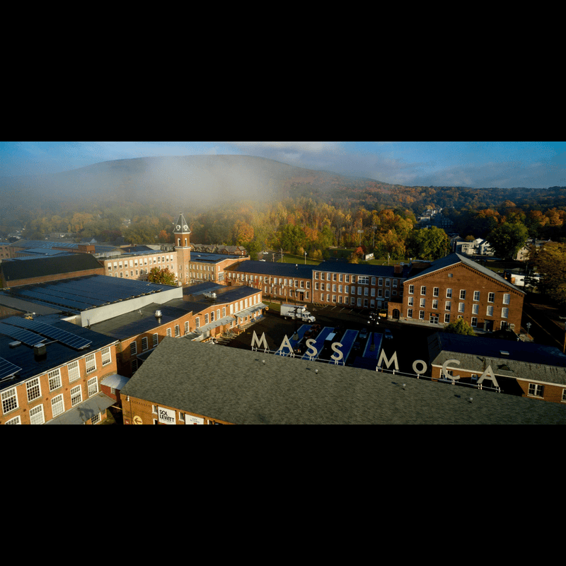
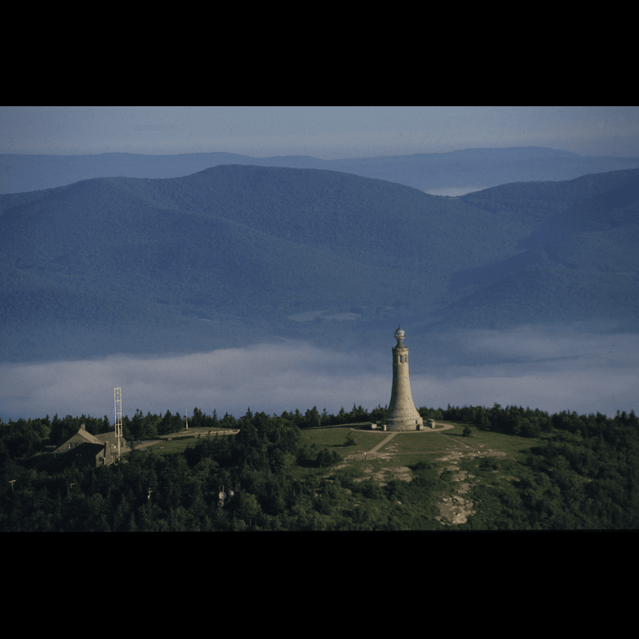
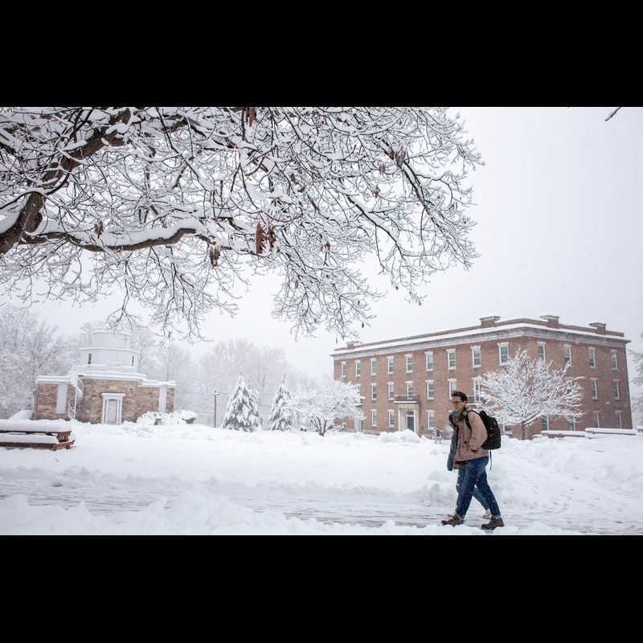
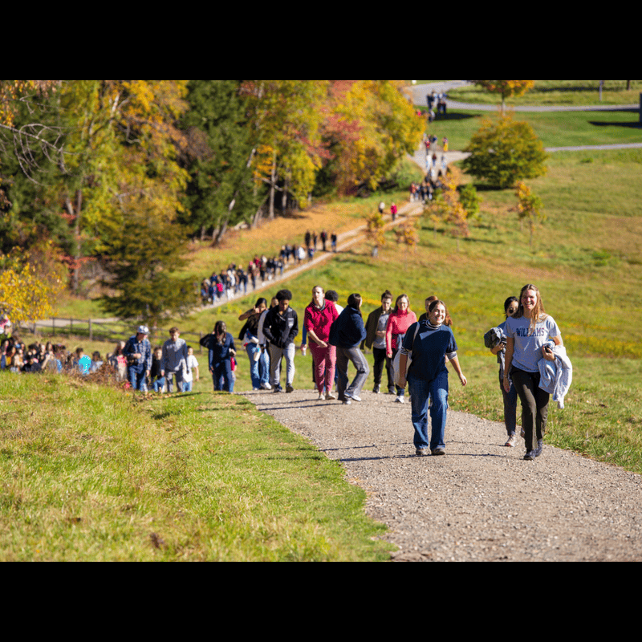
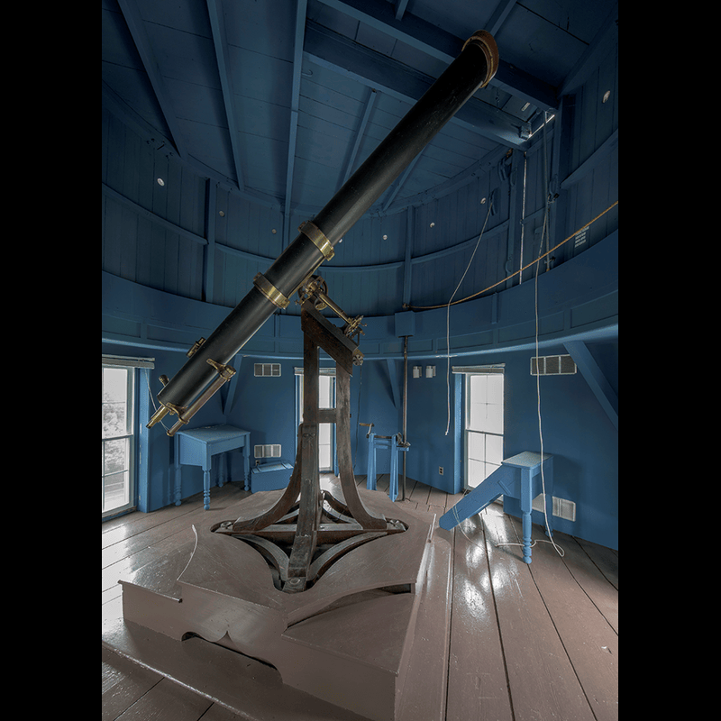
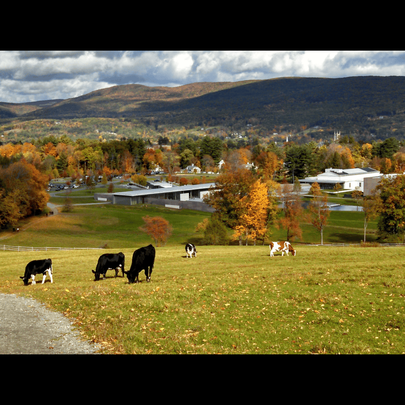

MASS MoCA

One of the largest contemporary art museums in the world, housed in a renovated factory complex featuring cutting-edge installations and performances.


One of the largest contemporary art museums in the world, housed in a renovated factory complex featuring cutting-edge installations and performances.

Massachusetts' highest peak offers breathtaking hiking trails, panoramic views of five states, and the iconic Veterans War Memorial Tower at the summit.

A unique January term where students explore unconventional courses, from glassblowing to coding, pursue independent projects, or travel abroad for immersive experiences.

A surprise fall tradition where classes are cancelled and the entire campus hikes to the summit of nearby peaks to celebrate the season's beauty together.

The oldest operating astronomical observatory in the United States, offering stargazing nights and housing historic telescopes alongside modern research equipment.

A popular hiking destination right on campus, Stone Hill features scenic trails, the historic Stone Tower, and stunning views of the Purple Valley below.